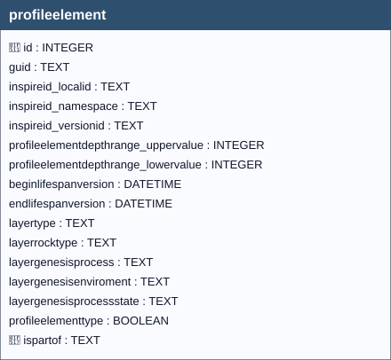

“An abstract spatial object type grouping soil layers and / or horizons for functional/ operational aims.”1
INSPIRE Data Specification on Soil – Technical Guidelines,
D2.8.III.3.
https://inspire-mif.github.io/technical-guidelines/data/so/dataspecification_so.pdf
In the INSPIRE Soil model, Profile Element is an abstract type that groups the vertical slices composing a soil profile; it specialises into Soil Horizon and Soil Layer. A Soil Horizon is a pedogenetically formed, relatively homogeneous layer (roughly parallel to the surface) identified by morphological/analytical characteristics. A Soil Layer is an arbitrary (often depth‑based) slice or a grouping of horizons, not necessarily reflecting pedogenic boundaries.2341
The boolean field profileelement.profileelementtype determines the specialisation:
0 → Horizon1 → LayerThis behaviour is enforced by database triggers. See the DDL for details.5
profileelement table per typeDepth range & validity (applies to both types). At least one of
profileelementdepthrange_uppervalueorprofileelementdepthrange_lowervaluemust be non‑null; if both are provided,uppervaluemust be less thanlowervalue(i.e., depth increases downward).5
profileelementtype = 0)layertype, layerrocktype, layergenesisprocess, layergenesisenviroment, layergenesisprocessstate) are forbidden on Horizons; triggers reject inserts/updates that set them.5faohorizonnotationtype, and other horizon notation via otherhorizon_profileelement); triggers enforce that the associated profileelement is a Horizon.5profileelement (Horizon or Layer) references its parent profile via ispartof → soilprofile.guid.15profileelementtype = 1)layertype must come from the LayerTypeValue codelist;layerrocktype from LithologyValue;layergenesisprocess from EventProcessValue;layergenesisenviroment from EventEnvironmentValue;layergenesisprocessstate from LayerGenesisProcessStateValue.layertype is not “geogenic”, the genesis‑related fields (layerrocktype, layergenesis*) must be NULL; dedicated triggers enforce this consistency.5profileelementtype = 0 on the target element.5ispartof.15Warning
Records that do not comply with the defined constraints shall be rejected by the system and shall not be persisted in the GeoPackage.
https://inspire.ec.europa.eu/featureconcept/SoilHorizon
https://inspire.ec.europa.eu/featureconcept/SoilLayer
https://inspire.ec.europa.eu/featureconcept/ProfileElement:1
https://zenodo.org/records/13970777/files/II3-INSPIRE-Soil.pdf
./DDL_SO_14.sql

profileelement| Name | Type | Constraints | Description |
|---|---|---|---|
id |
INTEGER |
PRIMARY KEY | Primary Key of the Table. |
guid |
TEXT |
Universally unique identifier. | |
inspireid_localid |
TEXT |
A local identifier, assigned by the data provider. The local identifier is unique within the namespace, that is no other spatial object carries the same unique identifier. | |
inspireid_namespace |
TEXT |
Namespace uniquely identifying the data source of the spatial object. | |
inspireid_versionid |
TEXT |
The identifier of the particular version of the spatial object, with a maximum length of 25 characters. If the specification of a spatial object type with an external object identifier includes life-cycle information, the version identifier is used to distinguish between the different versions of a spatial object. Within the set of all versions of a spatial object, the version identifier is unique. | |
profileelementdepthrange_uppervalue |
INTEGER |
Upper depth of the profile element (layer or horizon) measured from the surface of a soil profile (in cm). | |
profileelementdepthrange_lowervalue |
INTEGER |
Lower depth of the profile element (layer or horizon) measured from the surface of a soil profile (in cm). | |
beginlifespanversion |
DATETIME |
NOT NULL, DEFAULT strftime(‘%Y-%m-%dT%H:%M:%fZ’, ‘now’) | Date and time at which this version of the spatial object was inserted or changed in the spatial data set. |
endlifespanversion |
DATETIME |
Date and time at which this version of the spatial object was superseded or retired in the spatial data set. | |
layertype |
TEXT |
Assignation of a layer according to the concept that fits its kind. | |
layerrocktype |
TEXT |
Type of the material in which the layer developed. | |
layergenesisprocess |
TEXT |
Last non-pedogenic process (geologic or anthropogenic) that coined the material composition and internal structure of the layer. | |
layergenesisenviroment |
TEXT |
Setting in which the last non-pedogenic process (geologic or anthropogenic) that coined the material composition and internal structure of the layer took place. | |
layergenesisprocessstate |
TEXT |
Indication whether the process specified in layerGenesisProcess is on-going or seized in the past. | |
profileelementtype |
BOOLEAN |
NOT NULL, DEFAULT 0 | Boolean value to indicate whether the record is of Horizon or Layer type. |
ispartof |
TEXT |
NOT NULL | Foreign key to the SoilProfile table, guid field. |
In this table, the primary key is the id field (integer, auto-incrementing).
There is also a text field named GUID, which stores a UUID (Universally Unique Identifier) compliant with RFC 4122.
Although GUID is not mandatory at the schema level (it is not declared NOT NULL), its functional requirement is enforced by two triggers:
Any foreign keys (FK) from other tables reference this table’s GUID field rather than the id field, ensuring stable and interoperable references across datasets and database instances.
Note
GUID management is handled by database triggers, which ensure their automatic generation at the time of record insertion, without any user involvement.
The layertype,layerrocktype, layergenesisprocess, layergenesisenviroment and layergenesisprocessstate fields are coded fields(codelist-based attribute), meaning that they can only contain values belonging to a predefined codelists, in accordance with the INSPIRE specifications.
Warning
Any attempt to insert a value that is not included in the corresponding codelist is considered invalid by the system and will result in the failure of the data insertion operation.
The complete list of allowed codes is stored in the codelist table.
The associated documentation, provides a detailed description of:
in accordance with the adopted conceptual model.
The semantic and syntactic validation of the inserted values is enforced at the database level through dedicated control triggers (i_layertype/u_layertype/i_layerrocktype/u_layerrocktype/i_layergenesisprocess/u_layergenesisprocess/i_layergenesisenviroment/u_layergenesisenviroment/i_layergenesisprocessstate/ u_layergenesisprocessstate), ensuring compliance with the defined codelists.
Important
During data entry via the QGIS interface, users are supported by dropdown menus that display only the valid codes for the selected field.
Note
This mechanism reduces the risk of data entry errors and guarantees alignment with the constraints imposed by the INSPIRE codelists.
profileelement.ispartof → soilprofile.guid (ON UPDATE CASCADE, ON DELETE CASCADE)
soilprofile cascades to profileelement.datastream.guid_profileelement → profileelement.guid (ON UPDATE CASCADE, ON DELETE CASCADE)faohorizonnotationtype.guid_profileelement → profileelement.guid (ON UPDATE CASCADE, ON DELETE CASCADE)otherhorizon_profileelement.guid_profileelement → profileelement.guid (ON UPDATE CASCADE, ON DELETE CASCADE)| Name | Unique | Columns | Origin | Partial |
|---|---|---|---|---|
idx_profileelement_ispartof |
No | ispartof |
c |
No |
For every trigger you will find:
profileelementguid / profileelementguidupdateWhen they run: AFTER INSERT / AFTER UPDATE OF guid
What they do: Generate a GUID when missing; prevent changing it later.
If the check passes: Insert writes GUID; unchanged updates proceed.
If the check fails: On change, abort with: Cannot update guid column.
i_ceckvalidversionprofileelementWhen it runs: BEFORE INSERT
What it does: Require beginlifespanversion < endlifespanversion.
If the check passes: Insert proceeds.
If the check fails: Aborts with: Table profileelement: beginlifespanversion must be less than endlifespanversion.
i_ceckvaliddeepprofileelement / u_ceckvaliddeepprofileelementWhen they run: BEFORE INSERT / BEFORE UPDATE
What they do: Enforce depth-range ordering: uppervalue must be less than lowervalue.
If the check passes: Statement proceeds.
If the check fails: Aborts with: Table profileelement: profileelementdepthrange_uppervalue must be less than profileelementdepthrange_lowervalue.
i_checkgeogenicfieldsnull / u_checkgeogenicfieldsnotnullWhen they run: BEFORE INSERT / BEFORE UPDATE
What they do: When layertype is not geogenic (http://inspire.ec.europa.eu/codelist/LayerTypeValue/geogenic), the fields layerrocktype, layergenesisprocess, layergenesisenviroment, layergenesisprocessstate must all be NULL.
If the check passes: Statement proceeds.
If the check fails: Aborts with a specific message pointing to the offending field (e.g., layerrocktype must be NULL when LayerTypeValue is not "geogenic".).
i_ceckhorizonfields / u_ceckhorizonfieldsWhen they run: BEFORE INSERT / BEFORE UPDATE
What they do: For horizon-type elements (profileelementtype = 0), all layer-specific attributes must be NULL.
If the check passes: Statement proceeds.
If the check fails: Aborts with messages such as layertype must be NULL when profilelement is "HORIZON".
i_layertype / u_layertypeWhen they run: BEFORE INSERT / BEFORE UPDATE
What they do: Validate layertype membership in the LayerTypeValue codelist.
If the check passes: Statement proceeds.
If the check fails: Aborts with: Table profileelement: Invalid value for layertype. Must be present in id of layertypevalue codelist.
i_layergenesisenviroment / u_layergenesisenviromentWhen they run: BEFORE INSERT / BEFORE UPDATE
What they do: If provided, layergenesisenviroment must exist in EventEnvironmentValue.
If the check passes: Statement proceeds.
If the check fails: Aborts with: Table profileelement: Invalid value for layergenesisenviroment. Must be present in id of eventenvironmentvalue codelist.
i_layergenesisprocess / u_layergenesisprocessWhen they run: BEFORE INSERT / BEFORE UPDATE
What they do: If provided, layergenesisprocess must exist in EventProcessValue.
If the check passes: Statement proceeds.
If the check fails: Aborts with: Table profileelement: Invalid value for layergenesisprocess. Must be present in id of eventprocessvalue codelist.
i_layergenesisprocessstate / u_layergenesisprocessstateWhen they run: BEFORE INSERT / BEFORE UPDATE
What they do: If provided, layergenesisprocessstate must exist in LayerGenesisProcessStateValue.
If the check passes: Statement proceeds.
If the check fails: Aborts with: Table profileelement: Invalid value for layergenesisprocessstate. Must be present in id of layergenesisprocessstatevalue codelist.
i_layerrocktype / u_layerrocktypeWhen they run: BEFORE INSERT / BEFORE UPDATE
What they do: If provided, layerrocktype must exist in LithologyValue.
If the check passes: Statement proceeds.
If the check fails: Aborts with: Table profileelement: Invalid value for layerrocktype. Must be present in id of lithologyvalue codelist .
i_check_depth_range / u_check_depth_rangeWhen they run: BEFORE INSERT / BEFORE UPDATE
What they do: Require that at least one of profileelementdepthrange_uppervalue or profileelementdepthrange_lowervalue is not NULL (i.e., some depth info is present).
If the check passes: Statement proceeds.
If the check fails: Aborts with: At least one of profileelementdepthrange_uppervalue and profileelementdepthrange_lowervalue must not be null.
u_begin_today_profileelement / u_begin_today_profileelement_errorWhen they run: AFTER UPDATE
What they do: Refresh beginlifespanversion when still active; block edits if the end is past.
If the check passes: Timestamp refreshed / update continues.
If the check fails: Aborts with: If you change record endlifespanversion must be greater than today.
European Commission – Joint Research Centre (JRC), ↩ ↩2 ↩3 ↩4
Soil Horizon — INSPIRE Feature Concept Dictionary. ↩
Soil Layer — INSPIRE Feature Concept Dictionary. ↩
Profile Element — INSPIRE Feature Concept Dictionary. ↩
Database schema (DDL) — tables, constraints & triggers for profileelement. ↩ ↩2 ↩3 ↩4 ↩5 ↩6 ↩7 ↩8 ↩9